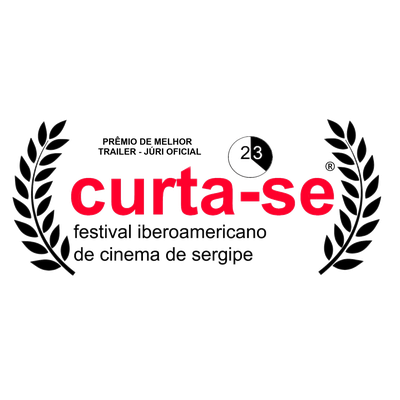
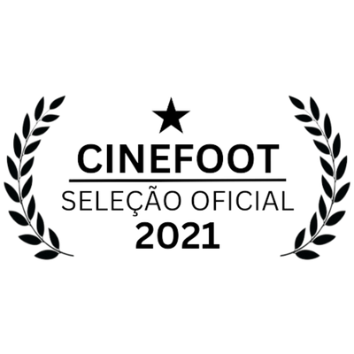
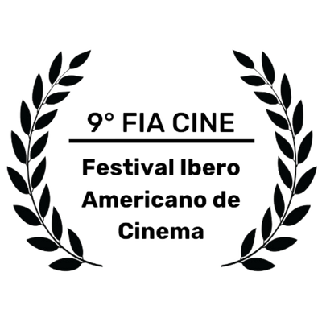
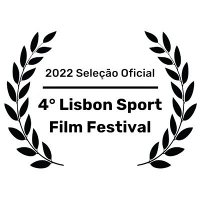
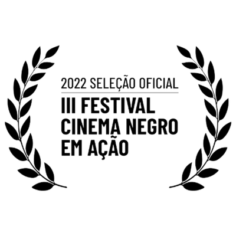

Imprensa & Mídia
Material oficial para jornalistas, marcas, parceiros institucionais e veículos de comunicação. Operadora: Da Silva e Vásquez Formação e Consultoria LTDA (CNPJ 62.085.700/0001-83).
O que somos
A Bola Conecta é o documentário e a metodologia pedagógica do Gondwana FC — Time da Educação, marca registrada da Da Silva e Vásquez Formação e Consultoria LTDA (CNPJ 62.085.700/0001-83). O projeto conecta futebol, ancestralidade africana e cultura afro-brasileira via Lei 10.639. O documentário tem 23 minutos, gravados no Brasil em 2021, com direção de Mônica Saraiva da Silva.
A partir do documentário, nasceu a Metodologia ABC (Audiovisual-Bola-Câmera), tecnologia social baseada no uso pedagógico do audiovisual, da bola e da câmera para o desenvolvimento de habilidades humanas e alfabetização socioeducativa.
Bio curta (250 caracteres)
A Bola Conecta é o documentário e a metodologia pedagógica do Gondwana FC — Time da Educação. Conecta futebol, ancestralidade africana e cultura afro-brasileira via Lei 10.639. Direção: Mônica Saraiva da Silva. 23 minutos, gravados no Brasil em 2021. Circulação aberta por escolas, comunidades e instituições no Brasil e no exterior.
Bio média (600 caracteres)
A Bola Conecta nasce da travessia de Mônica Saraiva da Silva (jornalista, fotógrafa e documentarista brasileira) e Sebastián Acevedo Vásquez (educador e ex-atleta chileno) pela cultura que o futebol cria quando a bola para nas quebradas, nas quadras de terra, nos campos de várzea. O documentário estreia com 23 minutos rodados no Brasil em 2021, em Salvador (Bahia) e Olinda (Pernambuco). A partir dele nasce a Metodologia ABC (Audiovisual-Bola-Câmera), aplicada em escolas, marcas e eventos com caminho didático estruturado e cumprimento da Lei 10.639. O trabalho marca presença na Copa do Mundo 2026 com 48 fichas de seleções, e mantém uma comunidade aberta chamada Time da Educação.
Sobre os realizadores
Mônica Saraiva da Silva
Jornalista, fotógrafa, documentarista e diretora brasileira. Cofundadora do Gondwana FC — Time da Educação. Dirige documentários sociais com foco em cultura afro-brasileira e futebol de quebrada desde 2017. Atuou em instituições como Museu do Futebol (Pacaembú), Museu da Língua Portuguesa e Memorial da América Latina. Lidera o conteúdo, a comunicação e a produção audiovisual do Gondwana FC.
Sebastián Acevedo Vásquez
Educador, pesquisador, ex-atleta e professor universitário chileno. Cofundador do Gondwana FC — Time da Educação. Professor na Universidad de Chile e na Universidad de Santiago de Chile. Mentor em inovação e empreendedorismo. Lidera estratégia, Metodologia ABC, parcerias institucionais e inovação no Gondwana FC. Co-fundador e Diretor de Ecossistemas no SportsCoLab (laboratório de inovação esportiva).
Trajetória e evidência institucional
Sem números fabricados — só evidência pública verificável. Onde o trabalho foi exibido, publicado, premiado ou reconhecido por instituições.
Exibição internacional em festivais
Seleção oficial e premiação em mostras de cinema no Brasil e no exterior. Inclui CINEFOOT (Festival Internacional de Cinema de Futebol, RJ), FIA CINE (9ª edição), Lisbon Sport Film Festival (4ª edição, 2022), Festival Ubuntu (3ª edição, 2022), Cinema Negro em Ação (3ª edição, 2022), Festival Elas nas Telas (Belém, 2025) e o prêmio de Melhor Trailer no Curta-se — Festival Ibero-americano de Cinema de Sergipe.
Reconhecimento pela UNESCO
Presença no Encontro de Organizações pelo Esporte para o Desenvolvimento e a Paz (UNESCO 2026, Santiago de Chile). Validação internacional do trabalho como prática de educação pelo esporte.
Publicação acadêmica
Artigo sobre a Metodologia ABC publicado pelo SESC São Paulo em 2025, no editorial sobre audiovisual, bola e câmera como ferramentas alfabetizadoras em habilidades sociais. Disponível em sescsp.org.br.
Cobertura editorial
Reportagens e matérias em UOL, Aventuras na História, O Regional, Rede Kino, Em Todo Lugar (Facha) e SESC. O documentário foi tema de podcast sobre o supercontinente Gondwana e a origem do futebol.
Premiações e exibições
O documentário circulou em mostras, festivais e espaços acadêmicos no Brasil e fora do país. Galeria rápida dos reconhecimentos oficiais recebidos até agora.






Lista em atualização no press kit completo. Para mais informações: /contato
Material para download
Logos em alta resolução, fotos dos realizadores e imagens do documentário disponíveis mediante solicitação por email. Resposta em até 48h úteis.
Logo oficial do Gondwana FC
Versão vetorizada em alta resolução (3300×2551 px, PNG com transparência). Padrão institucional para materiais de imprensa, capas, cards e mídias sociais. Solicite em contato.gondwana@gmail.com com o assunto "Press kit — logo Gondwana FC".
Contato de imprensa
Imprensa geral: contato.gondwana@gmail.com
Parcerias com marcas: contato.gondwana@gmail.com
Email alternativo: contato.gondwana@gmail.com
Material para download
Logos em alta resolução, fotos dos realizadores e imagens do documentário disponíveis mediante solicitação por email. Resposta em até 48h úteis.